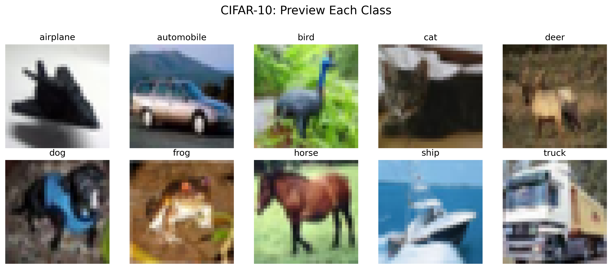

Computer vision and multimodal AI
Neural Network Architecture Lab
A technical project bundle covering image models, autoencoders, reconstruction, CLIP-style multimodal classification, and practical model-evaluation notebooks.

CNN
Image classification concepts
CLIP
Text and image matching ideas
Function
What this project does
01
Shows how different neural network architectures solve different AI tasks.
02
Demonstrates image classification, reconstruction, and multimodal model concepts.
03
Supports the broader portfolio by proving foundational AI architecture knowledge.